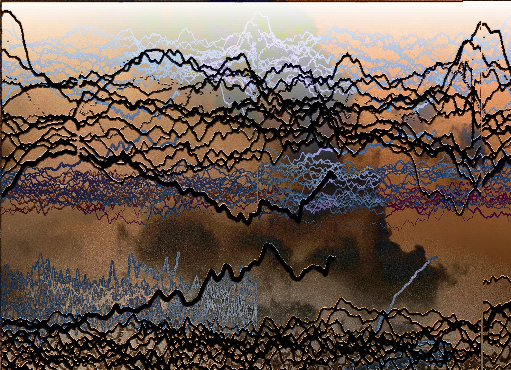
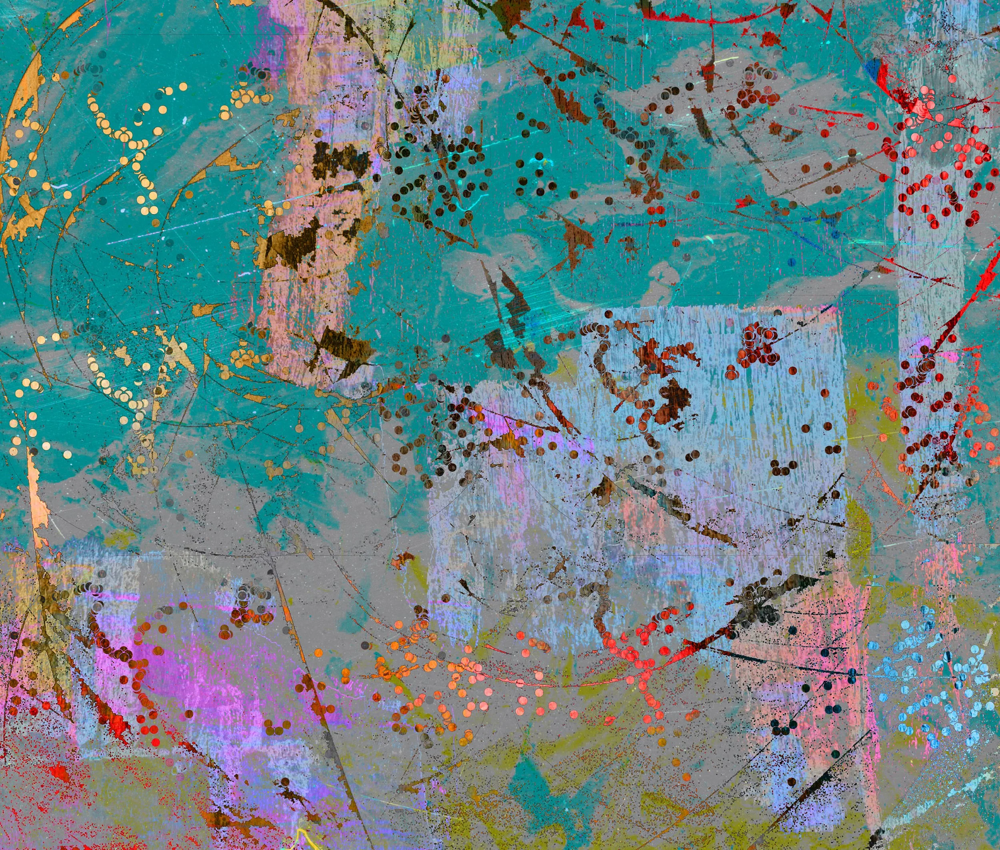

Visualization

Artist: Alisa Singer

Artist: Alisa Singer
Critique
Information Resolution
I chose Alisa Singer's Many Records Broken and 100 Year Sea Level Rise from her Environmental Graphiti series because they feel like a clear example of how data can exist as both information and art at the same time. Both pieces are rooted in climate data, but instead of presenting the information through traditional graphs or charts, Singer translates it into bold, graphic compositions that rely on color, repetition, and structure.
In Many Records Broken, the data being represented is the increasing number of record breaking heat events over time. Rather than showing a simple bar graph, Singer uses repeated shapes and strong color contrasts that build on each other visually. Even if you do not immediately know the exact numbers, you can feel that something is intensifying. The repetition becomes heavier and more condensed, which communicates acceleration. The translation of data into visual form is clear in terms of overall trend. You understand that records are being broken more frequently and that this increase is not subtle. However, the piece does not prioritize exact values. It emphasizes pattern and growth instead of specific measurements.
In 100 Year Sea Level Rise, the data focuses on the steady rise of sea levels across a century. Here, Singer uses horizontal bands and a strong upward composition to show the gradual but undeniable increase. The vertical movement is intuitive. As the image rises, so does the water. This translation feels especially clear because rising water naturally connects to vertical space. The metaphor does most of the explanatory work. You do not need to be an expert to grasp that the levels are climbing.
Metaphor and Meaning
The metaphors used in both pieces are appropriate and effective. Accumulation represents frequency in Many Records Broken, and vertical rise represents sea level increase in 100 Year Sea Level Rise. These metaphors clarify rather than confuse. They are direct, which makes the message accessible to a wide audience. At the same time, the directness means the work is not trying to be mysterious or open ended. It is making a clear argument and it wants you to notice the trend quickly.
Emotional Engagement
Through artistic interpretation, something important is gained. Traditional climate charts can feel clinical and distant, especially if you are not someone who likes reading graphs. Singer’s approach makes the data more immediate and emotional. In Many Records Broken, the dense buildup of marks almost feels overwhelming, which mirrors how overwhelming climate statistics can be. In 100 Year Sea Level Rise, the calm but steady upward motion creates a sense of inevitability. Emotion is definitely present, but it feels more like engagement than manipulation. The urgency comes from pattern and scale, not from dramatic imagery.
Conclusion
From a Tufte perspective, the work still respects informational integrity because the visuals are clean and not cluttered with unnecessary decoration. Most of what we see relates directly to the data being communicated, so it does not feel like the design is distracting from the point. The tradeoff is that Singer simplifies and does not focus on exact numbers the way a scientific chart would. What might be lost is analytical precision, since viewers may not walk away knowing the exact measurements of temperature or sea level change. Still, I think these works are effective because they maintain truthful trends while making the data visually and emotionally impactful. Overall, they function successfully as both art and information because they balance strong artistic style with an honest representation of what the data is showing.